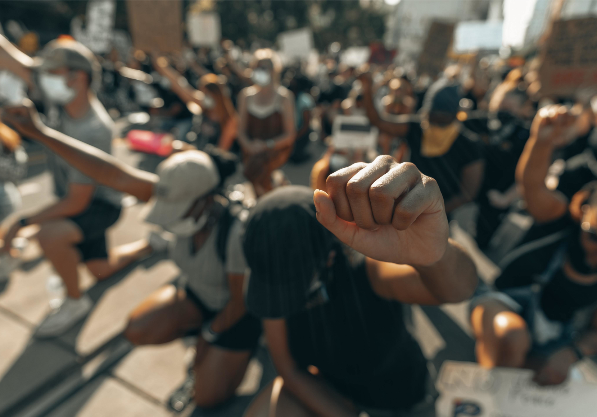

I diritti umani
Che il film colpisce la sensibilità degli spettatori non è un caso, infatti i soprusi a cui si assiste nelle varie scene violano molti dei diritti umani.

Il 10 dicembre 1948 la Dichiarazione Universale Dei Diritti umani stilò una lista di diritti inalienabili, che tutt’oggi è sinonimo di libertà internazionale.
Relazioni col film
Nel film sono presenti continue violazioni dei diritti umani, proponendo così una realtà lontana ma non per questo da ignorare.
L’inizio del viaggio
I due protagonisti devono addentrarsi nel deserto del Sahara insieme ad altri compagni. Questo viaggio risulterà inumano e difficile perché la guida che li accompagna lascerà indietro chi è in fin di vita e non può andare avanti, violando il “Diritto Alla Vita” sancito nell’articolo 3.
La polizia libica
Raggiunta la Libia, la corrotta polizia della zona conduce Seydou in un carcere, con conseguente violazione dell’articolo 9, “Nessuna detenzione ingiusta”.
Il carcere libico
Seydou viene condotto in una struttura dove assiste a crudeltà e scene atroci. Un contesto inumano come quello del carcere libico viola totalmente gli articoli 4 e 5: “Nessuna schiavitù” e “Nessuna tortura”.
Venduto come schiavo
Seydou, insieme ad un uomo che trova all’interno della struttura, viene venduto come schiavo per lavorare come muratore presso una villa. In questo caso si viola l’articolo 23 “Diritti dei lavoratori”.
Tripoli
Il proprietario della villa è soddisfatto del lavoro compiuto, ed aiuta i due nuovi compagni a raggiungere Tripoli. Qui, Seydou e Moussa si ricongiungono.
L'ultimo viaggio
Seydou sarà costretto a guidare una barca verso l’Italia con altri migranti, nonostante non sappia governarla. L’ultimo viaggio sarà pieno di momenti difficili, situazioni ingestibili, dove anche i bisogni elementari verranno meno.
I diritti più importanti
Ci sono altri tre articoli da citare: “Hai i tuoi diritti ovunque tu vada”, “Un mondo libero e giusto”, e l’ultimo, ma il più importante: “Nessuno può toglierti i tuoi diritti”. Questa frase breve e diretta cela, secondo un parere personale, tutta l’essenza dei diritti umani, nonché il voler muoversi verso una società più equa e pacifica.
L'articolo 28
Bisogna concentrarsi anche sull'articolo 28, "Un mondo libero e giusto", poiché la recente storia Europea ha dimostrato che la violazione dei diritti umani è un fenomeno presente non solo in Africa, ma anche negli stati occidentali.